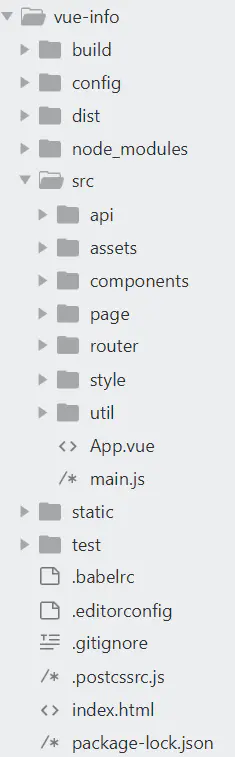

根据CNodejs社区提供的接口地址，用vue2.0重写了一下，界面布局有点粗糙。
用到的主要是vue-cli、vue-router、axios、flex布局
个人中心（登录退出）
首页列表（主题分类，下拉加载）
文章详情（包括发表评论，回复评论，点赞，收藏）
用户信息（点击头像）
消息中心（已读、未读）
发布主题（支持markdown编辑且可预览）
1 | 安装运行 |

主要是在vue-cli的基础上开发，按照接口地址一个一个功能来实现
1 使用vue-cli搭建项目 vue init webpack projectname
2 修改文件结构，在app.vue中引入公共样式文件，如果没有统一下载依赖文件，这里需要下载一些依赖，例如npm install sass-loader -Dnpm install node-sass -D // -D (--save-dev)
项目过程中被记录下来的一些点
1.考虑组件结构;引入外部样式时，貌似要在句尾加分号吗;组件命名注意不要和html5的标签重复;渲染一段代码可以用v-html
2.最重要的是src文件夹: 这里面的几个文件夹assets 存放静态文件，比如图片等，说明一下，vue一般是把css写在每个vue中的，components是组件，一个页面可以理解为由很多很多的组件组成的。
app.vue就是主要的页面，可以理解为把这些组件组合起来的文件。
main.js其实是用于组合app.vue 和index.html
3.组件递归调用,自定义指令，日期格式化，解构赋值，使用scss
4.swiper有个高度auto的设置，可以翻页全部后显示底部页脚
5.取值的异步问题，虽然能获取值，但是报错未定义,解决方法是在data里面初始化一下
6.检测数组变化，实时渲染页面Vue.set(this.arr, arrEle, !this.arr[arrEle])
7 感觉时间真的很着急，有的功能还没有实现，可能以后再去看吧，左右滑动切换tab，锚点定位，网页icon,编辑器图片上传问题，尝试写一个下拉列表的组件，扫码登录这个不知道能不能实现
8mounted调用method里面的方法
1 | mounted(){ |
9.关于下拉加载更多，对浏览器滚动判断问题
10.锚点定位scrollIntoView，或许应该要写一些demo好好研究一下
11.关于生产环境和开发环境接口的问题，想要自动切换接口地址，需要做一些设置
config/dev.env.js和config/prod.env.js 里面进行设置
1 | 'use strict' |
后面那个BASE_API的值是’ ‘’ ‘’ ‘外面有个单引号